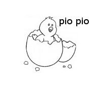
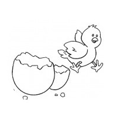

I Mesi
lunedì chiusin, chiusino
martedì bucò l’ovino
sbucò fuori mercoledì
pio, pio, pio fece giovedì
venerdì fu un bel pulcino
beccò sabato un granino
Ladomenica mattina
aveva già la sua crestina
-
Lunedì
-
Martedì
 -
Mercoledì

-
Giovedì
 -
Venerdì
 -
Sabato

-
Domenica